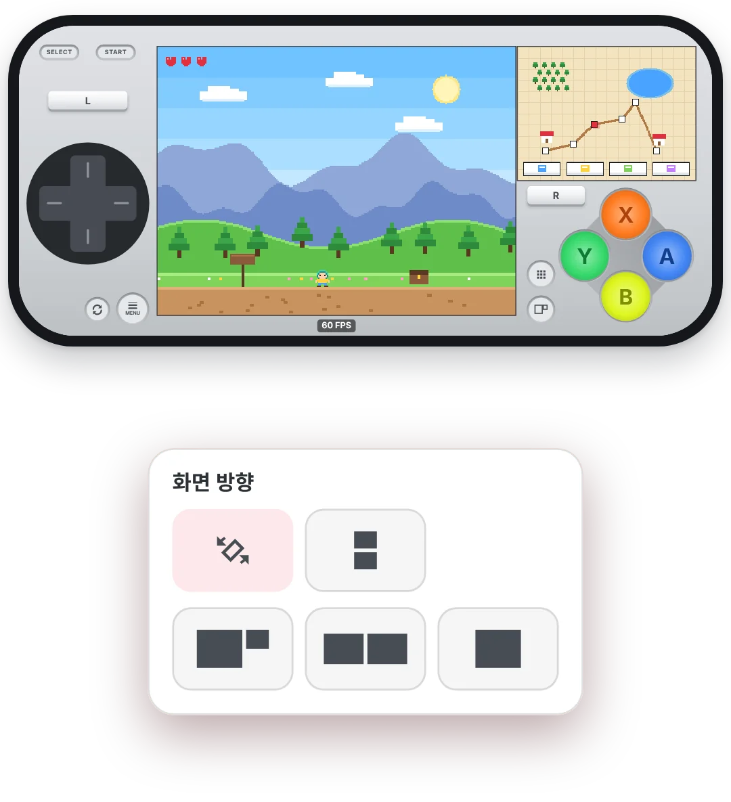
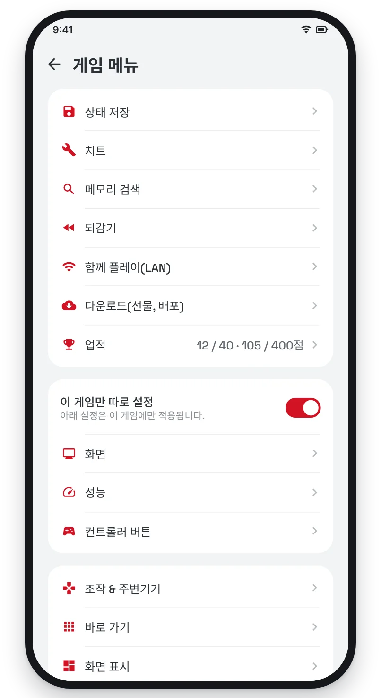
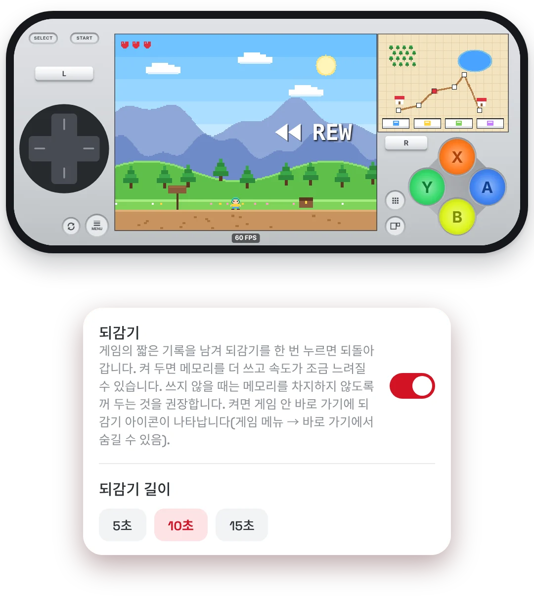

자체 개발 고정밀 코어를 탑재한 NDS 에뮬레이터. 고화질 3D, 로컬 통신, 치트, 상태 저장 지원.

게임마다 아이콘과 제목을 자동으로 읽고, 하던 곳에서 이어서

CarloDS는 Android 스마트폰과 태블릿을 위한 NDS 에뮬레이터입니다. ARM9·ARM7 프로세서, 2D·3D 그래픽, 사운드, 무선 통신, 내장 BIOS를 포함한 에뮬레이션 코어를 모두 자체 개발했으며, 다수의 실기 테스트 결과를 기준으로 타이밍과 화면을 항목별로 보정하여 실기와 동일한 동작을 목표로 합니다. 대부분의 게임은 BIOS 파일 없이 실행되며, ZIP 형식도 지원합니다.
세로, 큰 화면+작은 화면, 나란히, 한 화면을 한 번에

저사양·중급·고사양을 한 번에, 3D는 최대 4배

상태 저장, 치트, 되감기, 무선 플레이, 다운로드 콘텐츠, 업적

공유기가 없어도 휴대폰 핫스팟이면 OK

게임을 하면서 떠 있는 창에서 값을 검색

한 번 누르면 5·10·15초 전으로, 거기서 이어서 플레이
